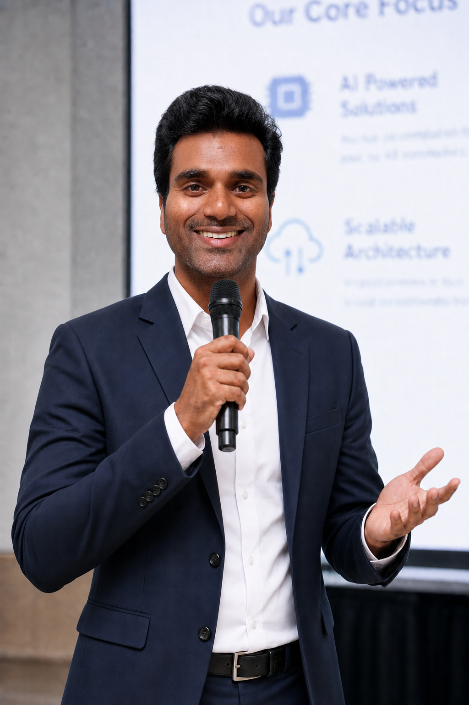

Site Reliability Engineer & DevOps Professional
12+ years building scalable, reliable, and secure systems at General Motors, Microsoft, Nuance, Siemens, Intelizign, C-DAC, and TCS. Passionate about helping the next generation of tech professionals bridge the gap between education and industry.
Raju Vadarevu is a seasoned Site Reliability Engineer (SRE) and DevOps professional currently working in Limerick, Ireland. With over a decade of hands-on experience across cloud infrastructure, CI/CD pipelines, and system observability, he has built a career that spans some of the most recognised names in global tech.
Having navigated the journey from a fresh graduate to a senior engineer at companies like Microsoft and General Motors, Raju understands exactly what it takes to break into the industry — and what common pitfalls trip talented graduates up. That lived experience is the foundation of every techsery career guidance session.
His sessions are direct, practical, and grounded in real hiring patterns — no generic advice, no filler. Just the strategies that actually move the needle on your job search.
Practical career guidance for tech aspirants — personal branding, resume tailoring, finding hidden roles, and building your network. No fluff. Just what works.